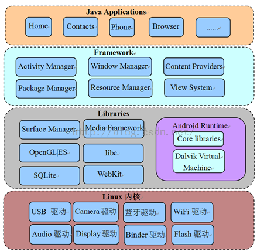

Innost的专栏
深入理解Android与其他技术，管理，人生百态，团队建设等
 目录视图
目录视图 摘要视图
摘要视图 订阅
订阅版权声明：本文为博主原创文章，未经博主允许不得转载。
由于《深入理解Android 卷一》和《深入理解Android卷二》不再出版，而知识的传播不应该因为纸质媒介的问题而中断，所以我将在CSDN博客中全文转发这两本书的全部内容。
第一章 阅读前的准备工作
本章主要内容
- 本章简单介绍Android系统架构、编译环境的搭建以及一些工具的使用。
1.1 系统架构
1.1.1 Android系统架构
Android是Google公司推出的一款手机开发平台。该平台本身是基于Linux内核的，图1-1展示了这个系统的架构：

图1-1 Android系统架构
从上图中可以看出，Android系统大体可分为四层，从下往上依次是：
- Linux内核层，目前Android2.2（代号为Froyo）基于Linux内核2.6版本。
- Libraries层，这一层提供动态库（也叫共享库）、Android运行时库、Dalvik虚拟机等。从编程语言上来说，这一层大部分都是用C或C++写的，所以也可以简单地把它看成是Native层。
- Libraries层之上是Framework层，这一层大部分用Java语言编写。它是Android平台上Java世界的基石。
- Framework层之上就是Applications层了，和用户直接交互的就是这些应用程序，它们都是用Java开发的。
从上面的介绍可看出，Android最大的特点之一，恐怕就是搭建了一个被广大Java开发者热捧的Java世界了。但该世界并不是空中楼阁，它的运转依赖另一个被Google极力隐藏的Native世界。两个世界的交互关系可用图1-2来表示：

图1-2 Java世界和Native世界交互
从上图可知：
- Java虽具有和平台无关的特性，但Java和具体平台之间的隔离却是由JNI层来做到的。Java是通过JNI层调用Linux OS中的系统调用来完成对应的功能的。例如创建一个文件、创建一个Socket等。
- 除了Java世界外，还有一个核心的Native世界，它为整个系统高效和平稳的运行提供了强有力的支持。一般而言，Java世界经由JNI层通过IPC方式和Native世界交互。而Android平台上最为神秘的IPC方法就是Binder了。在第六章将详细介绍Binder。除此之外，Socket也是常用的IPC方式。这些内容在后面的代码分析中都会见到。
1.1.2 本书的架构
本书所分析的模块也将遵循Android系统架构，如图1-3所示：

图1-3 本书的架构图
从上图可知，本书所分析的各个模块除未涉及Kernel外，其他三层均有所涉足，它们分别是：
- Native层包括init、Audio系统（包括AudioTrack、AudioFlinger和AudioPolicyService）、Surface系统（包括Surface和SurfaceFlinger）、常用类（包括RefBase、sp、wp等）、Vold和Rild。
- Java Framework层包括Zygote、System_server以及Java中的常用类（包括Handler、Looper等）。
- Java Application层，包括MediaProvider和Phone。
1.2 搭建开发环境
本节，将介绍如何搭建Android源码开发环境。
首先，需要一个Linux系统，我本人推荐安装Ubuntu10.04（32位版本）。读者可从网上下载该版本的系统。Windows用户可使用VMWare或VirtualBox作为虚拟机，来安装Ubuntu10.04。我本人推荐VMWare，因为它的功能太强大了！
如果要使用VMWare，那么在安装完Ubuntu之后，一定要把VMWare Tools也安装上，因为这个工具会提供很多非常实用的功能。这里还有一个小建议，如果Linux系统只是个人使用，则建议用root账户登录系统。在工作中，曾发现很多用非root账户登录的同事整天都在sudo，输入密码，这样做就浪费了不少零碎的时间片。
假设读者已经安装好了Ubuntu 10.04（32位版本），并且以root账户登录到系统上了，接下来的工作是：
1.2.1 下载源码
Android源码采用Git①做版本管理工具，这个工具由Linux之父LinusTorvalds采用纯C开发。关于Git为什么使用C语言开发的问题，还引发了一场关于C和C++孰好孰坏的大讨论，不过Linus Torvalds显然没树起“居庙堂之高，则忧其民”的形象。对于普通码农而言，用最合适的工具、最实用的办法来完成好工作才是最重要的。所以C、C++、Java、Python等都仅仅是工具而已。
下面介绍如何下载源码。
1. 设置软件源
下载Android源码前，有些下载工具需要从Ubuntu软件源上下载。可以为Ubuntu系统指定一个软件源。有些软件源上有这些工具，有些却没有，而且各个软件源的下载速度也不同，所以应首先找到一个合适的软件源。Ubuntu软件源的设置界面如图1-3所示：

图1-3 Ubuntu软件源设置
从上图中可发现，将软件源地址设置成了http://mirror.bjtu.edu.cn/ubuntu。每个人可根据自己的情况选择合适的软件源。
2. 下载Android源码
下面开始下载Android源码，工序比较简单，可一气呵成。
- apt-get install git-core curl #先下载这两个工具
- mkdir –p ~/android/froyo #在登录用户的目录下新建android和froyo两个目录
- cd ~/android/froyo #进入这个目录
- curl http://Android.git.kernel.org/repo > ./repo #从源码网站下载repo脚本，该脚本是Google为了方便源码下载而提供的。通过该脚本可下载整套源码。
- chmod a+x repo #设置该脚本为可执行
- ./repo init -u git://Android.git.kernel.org/platform/manifest.git –bfroyo #初始化git库
- ./repo sync #下载源码，大小为2个多GB，网速快估计得要2个多小时。
下载完后，该目录中的内容如图1-4所示：

图1-4 源码下载结果
注意，Kernel的代码必须要单独下载，下载方法如下：
git clone git://android.git.kernel.org/kernel/common.gitkernel
1.2.2 编译源码
1. 部署JDK
Froyo的编译依赖JDK1.5，所以首先要做的就是下载JDK1.5。下载网址是http://www.oracle.com/technetwork/java/javase/downloads/index-jdk5-jsp-142662.html。下载得到的文件为jdk-1_5_0_22-linux-i586.bin。把它放到一个目录中，比如我本人，就将它放在了/develop中，然后在这个目录中执行：
./jdk-1_5_0_22-linux-i586.bin #执行这个文件
这个命令其实就是解压，解压后的结果在/develop/jdk1.5.0_22目录中。现有了JDK，再按照下面的步骤部署它即可：
- 在~/.bashrc文件的末尾添加以下几句话：
exportJAVA_HOME=/develop/jdk1.5.0_22 #设置为刚才解压的目录
exportJRE_HOME=JAVA_HOME/jre
exportCLASSPATH=$JAVA_HOME/lib:$JRE_HOME/lib:$CLASSPATH
exportPATH=$JAVA_HOME/bin:$JRE_HOME/bin:$PATH
- 重新登录系统，这样，JDK资源就能被正确找到了。
2. 编译源码
Android的编译有自己的一套规则，主要利用的就是mk文件。网上有太多关于它的解说了，这里不再赘述，只简单介绍其编译工序：
进入源码目录（以我的开发环境为例），也就是 cd /develop/download_froyo
- 执行 . build/envsetup.sh，这个脚本用来设置Android的编译环境。
- 执行choosecombo命令，这个命令用来选择编译目标（如目标硬件平台、eng还是user等）。一般而言，手机厂商会设置自己特有的编译选项。
执行完上面几个步骤后，就可以编译系统了。Android平台提供了三个命令用于编译，它们分别是make、mmm和mm，这三个命令的使用方法及其优劣如下：
- make：不带任何参数，它用于编译整个系统，时间较长，我本人不推荐这种做法，除非读者想编译整个系统。
- make MediaProvider ：下面几个例子都以编译MediaProvider为例。这种方式对应于单个模块编译。它的优点是，会把该模块依赖的其他模块也一起编译。例如 make libmedia，就会把libmedia依赖的库全编译好。其缺点也很明显，它需要搜索整个源码来定义MediaProvider模块所使用的Android.mk文件，并且还要判断该模块所依赖的其他模块是否有修改。整体编译时间较长。
- mmm packages/providers/MediaProvider ：该命令将编译指定目录下的目标模块，而不编译它所依赖的模块。所以如果读者是初次编译，采用这种方式编译一个模块往往会报错。错误的原因是因为它依赖的模块没有被编译。
- mm ：这种方式需要先cdpackages/providers/MediaProvider目录，然后mm。该命令会编译当前目录下的模块。它和mmm一样，只编译目标模块。mm和mmm命令编译的速度都很快。
从使用的角度来看，我本人有如下建议：
- 如果只知道目标模块名，则应使用make 模块名的方式来编译目标模块。例如编译libmedia，则直接使用make libmedia即可。另外，初次编译时也要采用这种方法。
- 如果不知道目标模块名，而知道目标模块所处的目录，则可使用mmm或mm命令来编译。当然，初次编译还必须使用make命令。而以后的编译就可使用mmm或mm了，这样会节约不少时间。
一般的编译方式都使用增量编译，即只编译发生变化的目标文件。但有时则需重新编译所有目标文件，那么就可使用make命令的-B选项。例如 make –B 模块名，或者mm –B、mmm –B 。mm和mmm内部，也是调用make命令的，而make的-B选项将强制编译所有目标文件。
Android的编译工序比较简单，难点主要在Android.mk文件的编写。读者可上网搜索与此相关的学习资料。
3．本书各模块的编译目标
本书各模块的编译目标如表1-1所示，这里仅列出几个有代表性的模块：
表1-1 本书各模块编译目标
目标模块 | make命令 | mmm命令 |
init | make init | mmm system/core/init |
zygote | make app_process | mmm frameworks/base/cmds/app_process |
system_server | make services | mmm frameworks/base/services/java |
RefBase等 | make libutils | mmm frameworks/base/libs/utils |
Looper等 | make framework | mmm frameworks/base |
AudioTrack | make libmedia | mmm frameworks/base/media/libmedia |
AudioFlinger | make libaudioflinger | mmm frameworks/base/libs/audioflinger |
AudioPolicyService | make libaudiopolicy | mmm hardware/msm7k/libaudio-qsd8k (示例) |
SurfaceFlinger | make libsurfaceflinger | mmm frameworks/base/libs/surfaceflinger |
Vold | make vold | mmm system/vold/ |
Rild | make rild | mmm hardware/ril/rild/ |
MediaProvider | make MediaProvider | mmm packages/providers/MediaProvider |
Phone | make Phone | mmm packages/apps/Phone/ |
假设make framework，那么编译完的结果则如图1-5所示：

图1-5 make framework的结果
从上图可看出，make命令编译了framework-res.apk以及framework.jar两个模块。它们编译的结果在out/target/product/generic/system/framework下。读者利用adb 命令把这两个文件push到手机的system/framework目录，即可替换旧的文件。如想测试这个新模块，则需要先杀掉所有使用该模块的进程，进程重启后会重新加载模块，这时就能使用新的文件了。例如，想测试刚修改的libaudioflinger模块，adb push上去后，先杀掉mediaserver进程，因为libaudioflinger库目前只有该进程使用。当mediaserver重启后，就会加载新push上来的libaudioflinger库了。
系统服务被杀掉后一般都会自动重启（由init控制，在第三章中可见到）。
1.3 工具介绍
本节介绍Android开发和源码研究过程中两件比较实用的工具。
1.3.1 Source Insight介绍
Source Insight是阅读源码的必备工具，是一个Windows下的软件，在Linux平台上可通过wine安装。这里，就不讲述如何安装Source Insight了，相信读者都会。下面介绍一下在Source Insight使用上的小技巧。
1. Source Insight工作减负
使用Source Insight时，需要新建一个源码工程，通过菜单项Project→New Project，可指定源码的目录。在工作中发现，很多同事常一股脑把Android所有源代码都加到工程中，从而导致了Source Insight运行速度非常慢。实际上，只需要将当前分析的源码目录加到工程即可。例如，新建一个Source Insight工程后，只把源码/framework/base目录加进去了。另外，当一个目录下的源码分析完后，可以通过Project→Add and Remove Project Files选项把无须再分析的目录从工程中去掉。如图1-6所示：

图1-6 添加或删除工程中的目录
从图中的框线我们可以发现：
- Source Insight支持动态添加或删除目录。通过这种方式可极大减少Source Insight的工作负担。
一般首先把framework/base下的目录加到工程，以后如有需要，再把其他目录加进来。
2. 调节字体
Source Insight默认的字体比较小，看着很费眼。怎么办？
选择工具栏上Options→Document options菜单，弹出Document Options对话框，其中左上部分有个Screen Fonts，然后会弹出一个字体对话框，在那里可选择大字体，例如四号，五号字体等。如图1-7所示：

图1-7 字体调节
3. 快速定位文件
工程建立好后，须通过Project→Rebuild Project选项来解析源码。另外，在研究源码时常常会只记得源码文件名，而不记得是在哪个目录下。没关系，Source Insight支持在源码中快速定位文件。使用方法如图1-8所示：

图1-8 快速定位文件
使用方法是：
- 先选择图1-8中左下角的那个按钮。
- 然后在左上角那个输入框中输入源码文件名，例如app_process。然后结果栏中就会把对应文件列出。
1.3.3 Busybox的使用
Busybox，号称Linux平台上的“瑞士军刀”，它提供了很多常用的工具，例如grep、find等。这些工具在标准Linux上都有，但Android系统却去掉了其中的大多数工具。这导致了我们在调试程序、研究Android系统时步履维艰，所以就需要在手机上安装Busybox。
1. 下载Busybox
我们可从下面这个网站中下载已编译好的Busybox，如图1-9所示：
http://www.busybox.net/downloads/binaries/1.18.4/

图1-9 Busybox下载
注意该网站已经根据不同平台编译好了对应的Busybox，我们可根据自己手机的情况下载对应的文件。例如HTC G7的CPU支持armv7l，所以我下载了最接近的busybox-armv6l。
小知识：arm v7表示的是ARM指令集为v7，目前ARM Cortex-A8/A9系列的CPU支持该指令集。
2. 安装和使用Busybox
下载完busybox后，需将它push到手机上。如：
adb push busybox /system/xbin #为了避免冲突，我push到了/system/xbin目录下了。
cd /system/xbin #进入对应目录
chmod 755 busybox #更改busybox权限为可执行
busybox –-install #安装busybox
grep #执行busybox提供的grep命令，或者busybox xxx执行xxx命令也行
Busybox安装完了，如执行busybox命令，就会打印如图1-10的输出。

图1-10 busybox提供的工具
从上图中可看出，busybox提供了不少的工具，这样，我们在研究Android系统时就如虎添翼了。
给手机安装busybox须有root权限，为学好Android，大家最好还是购买那种能被破解的手机吧。
1.4 本章小结
本章对Android系统、源码搭建、研究工具等做了部分介绍，相信读者现在已是迫不及待，跃跃欲试了吧？马上开始我们的源码征程！
- 顶
- 1
- 踩
- 0
- 猜你在找
- 3楼 Ritter_Liu 2015-08-07 11:28发表 [回复]
- 多谢凡平哥分享
- 1楼 huochai2008 2015-08-03 10:36发表 [回复]
- 赞楼主

核心技术类目
- 个人资料

阿拉神农
- 访问：1366907次积分：13788等级：
 排名：第435名
排名：第435名
- 原创：152篇转载：3篇译文：0篇评论：1943条
- 访问：1366907次积分：13788等级：
- 最新消息
- 好兄弟的新书《深入理解Android 卷3》即将上市，感谢大家对《深入理解Android》系列书籍的支持。
- 博客专栏

文章：81篇
阅读：1009994
- 阅读排行
- Android Wi-Fi Display（Miracast）介绍(90079)Android系统性能调优工具介绍(48010)Android深入浅出之Surface[1](45609)Android 4.2蓝牙介绍(40770)Android Looper和Handler分析(40660)Android Project Butter分析(38903)深入理解SELinux SEAndroid（第一部分）(35232)MTP in Android(30501)《深入理解Android：Wi-Fi，NFC和GPS》章节连载[节选]--第四章 深入理解wpa_supplicant(28646)Android MediaScanner 详尽分析(27710)
- 推荐文章
- 最新评论
- 深入理解Android之AOP深入理解Android之Java虚拟机Dalvik深入理解Android之Java虚拟机Dalvik深入理解Android之Gradle深入理解Android之Gradle深入理解Android之Java虚拟机Dalvik《深入理解Android：Wi-Fi，NFC和GPS》章节连载[节选]--第九章 深入理解GPS深入理解Android之Gradle深入理解Android之设备加密Device Encryption深入理解Android之Gradle
- fhyjxx: 博主写了一篇好文。最近在做日志模块，目前的想法是利用AOP方式，hook住一些想要监听的方法。但是p...
- crazyman2010: 感觉很好，先收藏起来
- AllenCoder: JVM经典之作
- Android_Ky: 深夜看这文章真心是豁然开朗，以前其实就看到过这篇文章，不过没有深究。今天深夜没人打扰，看的入神，不过...
- Android_Ky: 闭包，函数，属性，真心分不清楚啊。。分辨了半天
- demonyan: 初略看了一遍，绝对业界良心啊
- backup88: 感谢您的分享。
- ioniconline: @Innost:内存分析工具
- scnutiger: @jjr8986:可以的，三星的手机4.4就支持设备加密和解密，输对密码就可以了。
- Zhouztashin: 好文，谢谢 学习了~！